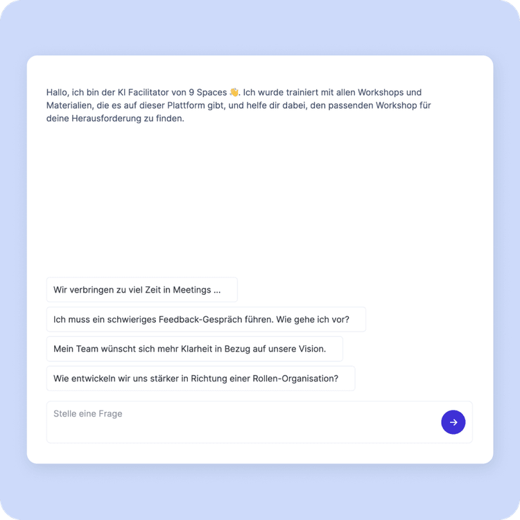
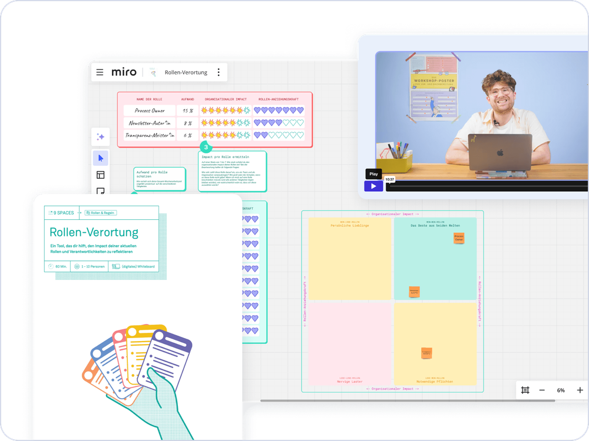
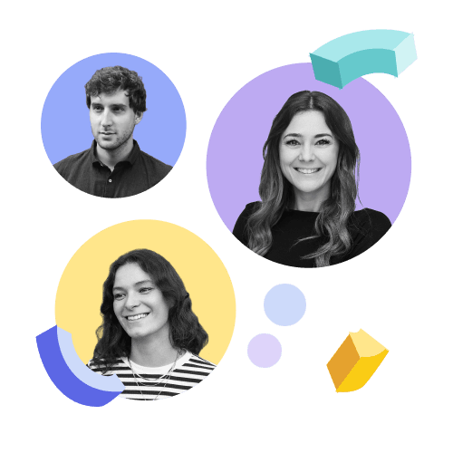

Solo
1 Zugang
299€
pro Jahr
zzgl. MwSt
Jährliche Abrechnung, jederzeit kündbar
Konflikte können dafür sorgen, dass sich etwas zum Positiven verändert. 9 Spaces hilft euch dabei, eine offene Feedback-Kultur zu entwickeln und Spannungen als Treiber der Veränderung zu nutzen.
Auf dieser Seite lernst du, wie aus Reibung Entwicklung wird – mit Tools, die Teams stärken.
Wer diesen Satz in der eigenen Organisation hört, sollte hellhörig werden. Die eine Wahrheit ist: Spannungen und Reibereien haben keinen sonderlich guten Ruf. Sie sind anstrengend und halten auf. Das stimmt.
Wahr ist aber auch, dass Spannungen entstehen, wo Menschen zusammenarbeiten. Sie lassen sich nicht verbieten und nur bedingt ignorieren. Sie sind einfach da.
Wir glauben, es ist sinnvoll, sie als Motor der Veränderung und Treibstoff der Organisation zu begreifen. Doch um dieses Potenzial zu nutzen, braucht es gute Methoden. Erst dann können Spannungen sichtbar gemacht, bearbeitet und in sinnvolle Veränderung übersetzt werden.

Unser KI-Facilitator findet für dich den passenden Workshop, der genau zu deinen Herausforderungen passt.
Auf 9 Spaces findest du über 150 fertige Workshops, die du mit < 5 Minuten Vorbereitungszeit starten kannst. Dabei helfen dir folgende Funktionen:

zzgl. MwSt
Jährliche Abrechnung, jederzeit kündbar
Zugang für mehrere Mitarbeitende in einem maßgeschneiderten Plan
Alle Features und Mehrwerte auf einem Blick?

Lass uns darüber austauschen, wie dein Team oder deine Organisation das volle Potenzial von 9 Spaces ausschöpfen kann. Mit echten Beispielen aus anderen Organisationen.